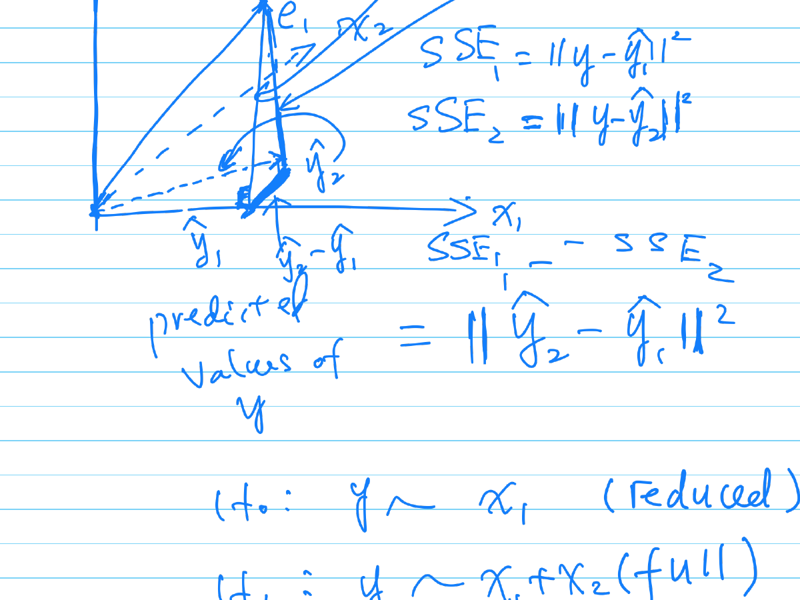
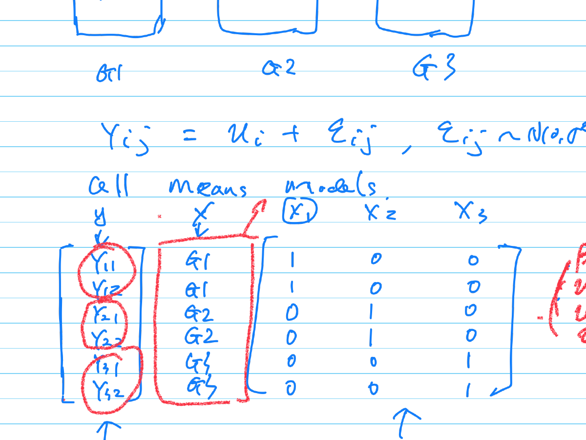

2 Introduction to Theory of Linear Models
2.1 Overview
This lecture covers the foundations of Linear Statistical Models, including Multiple Linear Regression and ANOVA.
2.1.1 Geometric Interpretation of Least Squares
We compare models based on the reduction of errors. Consider a full model and a reduced model (\(K_1\)).
Let:
- \(y\) be the observed vector.
- \(\hat{y}_1\) be the prediction from the reduced model.
- \(\hat{y}_2\) be the prediction from the full model.

The errors (residuals) are defined as: \[ e_1 = y - \hat{y}_1 \] \[ e_2 = y - \hat{y}_2 \]
The Sum of Squared Errors (SSE) representing the distance is: \[ SSE_1 = ||y - \hat{y}_1||^2 \] \[ SSE_2 = ||y - \hat{y}_2||^2 \]
The statistical test is often based on the comparison of \(SSE_1\) and \(SSE_2\) (or the reduction in sums of squares \(||\hat{y}_2 - \hat{y}_1||^2\)).
2.2 Multiple Linear Regression
2.2.1 Matrix Formulation
Suppose we have observations on \(Y\) and \(X_j\). The data can be represented in matrix form.
\[ \underset{n \times 1}{y} = \underset{n \times p}{X} \beta + \underset{n \times 1}{\epsilon} \]
Where the error terms are distributed as: \[ \epsilon \sim N_n(0, \sigma^2 I_n) \]
And \(I_n\) is the identity matrix: \[ I_n = \begin{pmatrix} 1 & 0 & \dots & 0 \\ 0 & 1 & \dots & 0 \\ \vdots & \vdots & \ddots & \vdots \\ 0 & 0 & \dots & 1 \end{pmatrix} \]
The scalar equation for a single observation is: \[ Y_i = \beta_0 + \beta_1 X_{i1} + \dots + \beta_p X_{ip} + \epsilon_i \]
2.3 Polynomial Regression
Polynomial regression fits a curved line to the data points but remains linear in the parameters (\(\beta\)).
The model equation is: \[ y_i = \beta_0 + \beta_1 x_i + \beta_2 x_i^2 + \dots + \beta_{p-1} x_i^{p-1} \]
2.3.1 Design Matrix Construction
The design matrix \(X\) is constructed by taking powers of the input variable.
\[ y = \begin{pmatrix} y_1 \\ \vdots \\ y_n \end{pmatrix} = \begin{pmatrix} 1 & x_1 & x_1^2 & \dots & x_1^{p-1} \\ 1 & x_2 & x_2^2 & \dots & x_2^{p-1} \\ \vdots & \vdots & \vdots & \ddots & \vdots \\ 1 & x_n & x_n^2 & \dots & x_n^{p-1} \end{pmatrix} \begin{pmatrix} \beta_0 \\ \beta_1 \\ \vdots \\ \beta_{p-1} \end{pmatrix} + \begin{pmatrix} \epsilon_1 \\ \epsilon_2 \\ \vdots \\ \epsilon_n \end{pmatrix} \]
2.4 One-Way ANOVA
ANOVA can be expressed as a linear model using categorical predictors (dummy variables).
Suppose we have 3 groups (\(G_1, G_2, G_3\)) with observations: \[ Y_{ij} = \mu_i + \epsilon_{ij}, \quad \epsilon_{ij} \sim N(0, \sigma^2) \]

2.4.1 Dummy Variable Matrix
We construct the matrix \(X\) to select the group mean (\(\mu\)) corresponding to the observation:
\[ \underset{6 \times 1}{y} = \underset{6 \times 3}{X} \begin{pmatrix} \mu_1 \\ \mu_2 \\ \mu_3 \end{pmatrix} + \epsilon \]
\[ \begin{bmatrix} Y_{11} \\ Y_{12} \\ Y_{21} \\ Y_{22} \\ Y_{31} \\ Y_{32} \end{bmatrix} = \begin{bmatrix} 1 & 0 & 0 \\ 1 & 0 & 0 \\ 0 & 1 & 0 \\ 0 & 1 & 0 \\ 0 & 0 & 1 \\ 0 & 0 & 1 \end{bmatrix} \begin{bmatrix} \mu_1 \\ \mu_2 \\ \mu_3 \end{bmatrix} + \epsilon \]
2.5 Analysis of Covariance (ANCOVA)
ANCOVA combines continuous variables and categorical (dummy) variables in the same design matrix.
\[ \begin{bmatrix} Y_1 \\ \vdots \\ Y_n \end{bmatrix} = \begin{bmatrix} X_{1,cont} & 1 & 0 \\ X_{2,cont} & 1 & 0 \\ \vdots & 0 & 1 \\ X_{n,cont} & 0 & 1 \end{bmatrix} \beta + \epsilon \]
2.5.1 Least Squares Estimation
For the general linear model \(y = X\beta + \epsilon\), the Least Squares estimator is:
\[ \hat{\beta} = (X'X)^{-1}X'y \]
The predicted values (\(\hat{y}\)) are obtained via the Projection Matrix (Hat Matrix) \(P_X\):
\[ \hat{y} = X\hat{\beta} = X(X'X)^{-1}X'y = P_X y \]
The residuals and Sum of Squared Errors are:
\[ \hat{e} = y - \hat{y} \] \[ SSE = ||\hat{e}||^2 \]
The coefficient of determination is: \[ R^2 = \frac{SST - SSE}{SST} \] where \(SST = \sum (y_i - \bar{y})^2\).